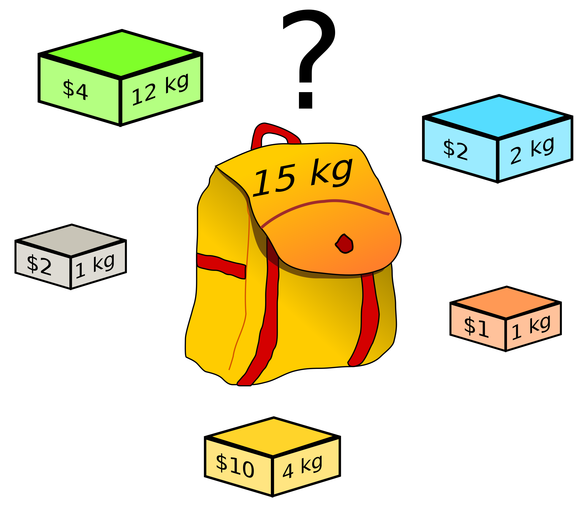
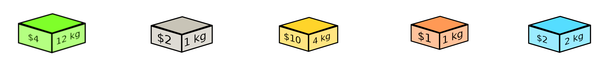
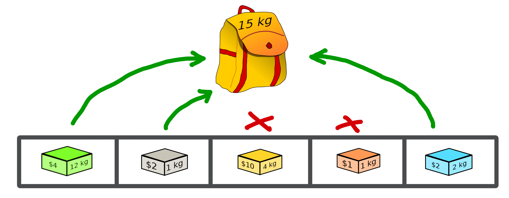
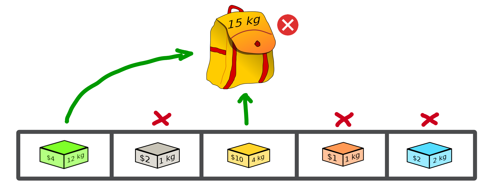
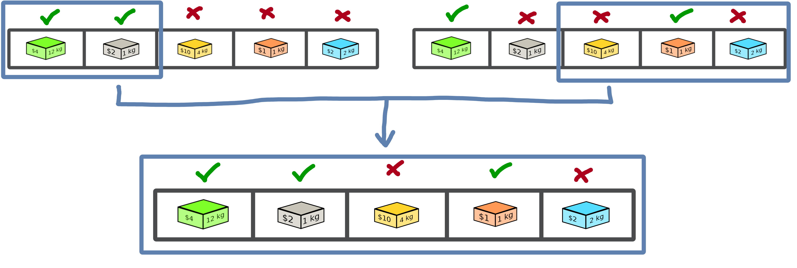
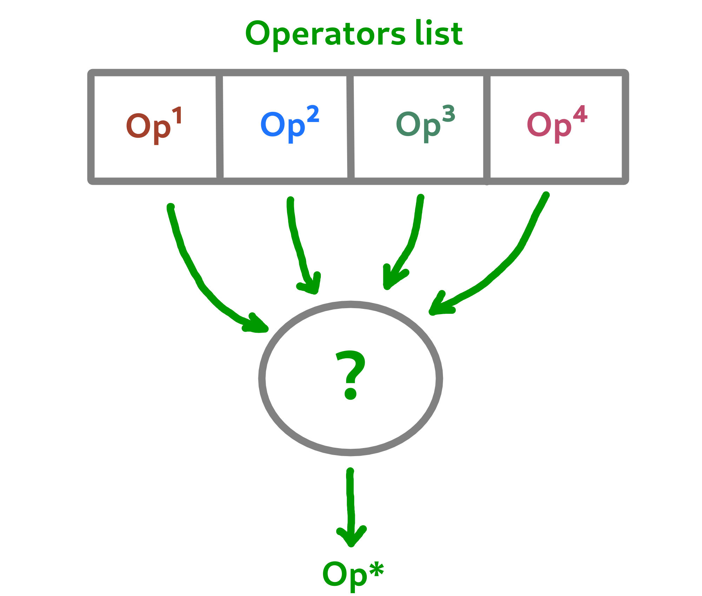
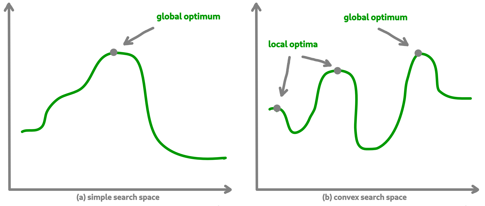
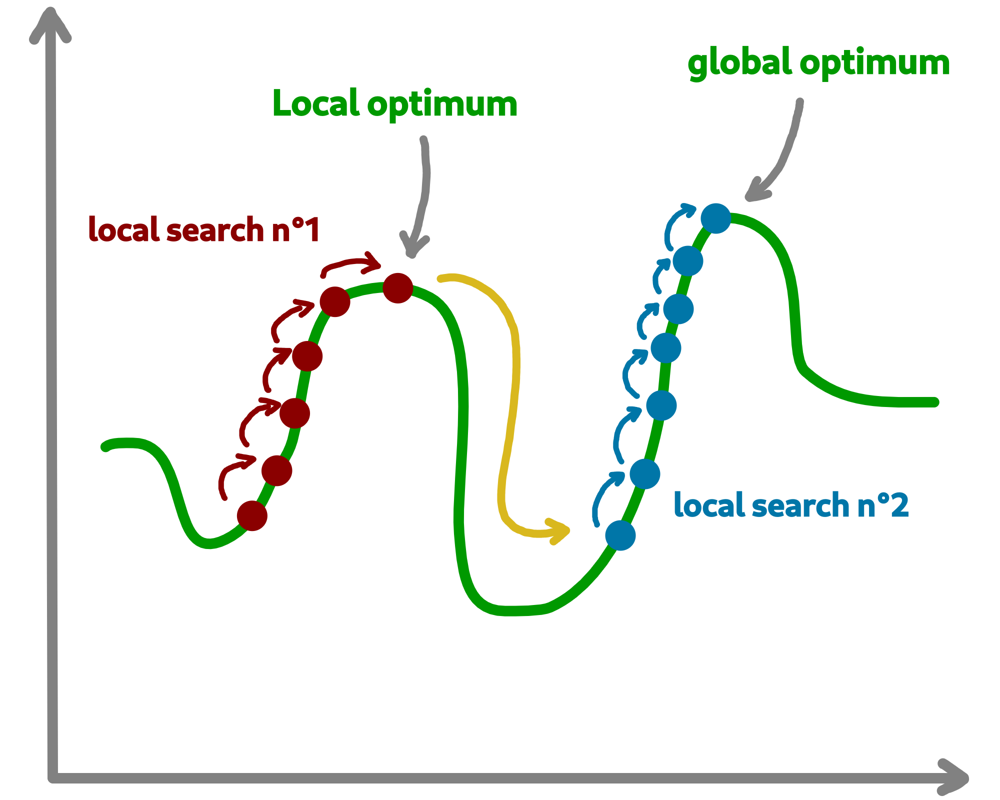
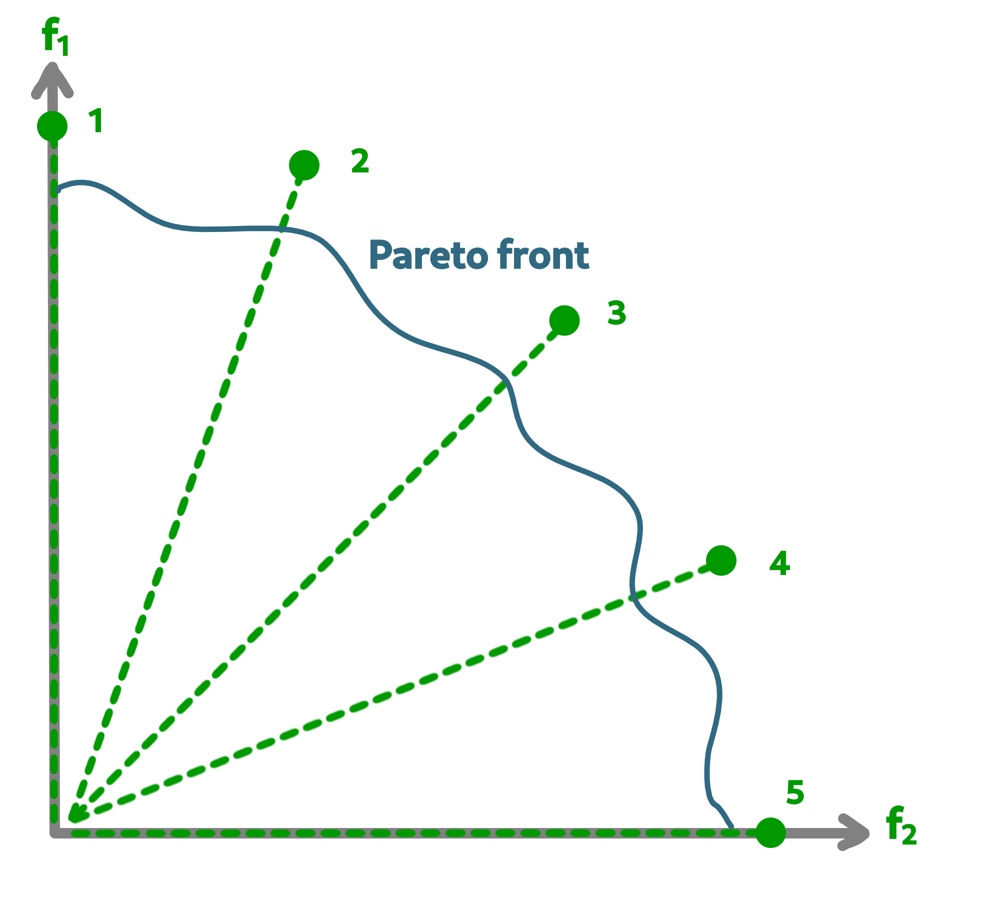

A tour of Macop¶
This documentation will allow a user who wishes to use the Macop optimisation package to understand both how it works and offers examples of how to implement specific needs.
It will gradually take up the major ideas developed within Macop to allow for quick development. You can navigate directly via the menu available below to access a specific part of the documentation.
Introduction¶
Macop is a python package for solving discrete optimisation problems in nature. Continuous optimisation is also applicable but not yet developed. The objective is to allow a user to exploit the basic structure proposed by this package to solve a problem specific to him. The interest is that he can quickly abstract himself from the complications related to the way of evaluating, comparing, saving the progress of the search for good solutions but rather concentrate if necessary on his own algorithm. Indeed, Macop offers the following main and basic features:
solutions: representation of the solution;
validator: such as constraint programming, a validator is a function which is used to validate or not a solution data state;
evaluator: stores problem instance data and implements a compute method in order to evaluate a solution;
operators: mutators, crossovers operators to update and obtain new solution;
policies: the way you choose the available operators (might be using reinforcement learning);
algorithms: generic and implemented optimisation research algorithms;
callbacks: callbacks to automatically keep track of the search space advancement and restart from previous state if nedded.

Based on all of these generic and/or implemented functionalities, the user will be able to quickly develop a solution to his problem while retaining the possibility of remaining in control of his development by overloading existing functionalities if necessary.
Problem instance¶
In this tutorial, we introduce the way of using Macop and running your algorithm quickly using the well known knapsack problem.
Problem definition¶
The knapsack problem is a problem in combinatorial optimisation: Given a set of items, each with a weight and a value, determine the number of each item to include in a collection so that the total weight is less than or equal to a given limit and the total value is as large as possible.
The image below provides an illustration of the problem:
{kind=link}
In this problem, we try to optimise the value associated with the objects we wish to put in our backpack while respecting the capacity of the bag (weight constraint).
Warning
It is a combinatorial and therefore discrete problem. Macop decomposes its package into two parts, which is related to discrete optimisation on the one hand, and continuous optimisation on the other hand. This will be detailed later.
Problem implementation¶
During the whole tutorial, the example used is based on the previous illustration with:
{kind=link}
Hence, we now define our problem in Python:
worth value of each objects
weight associated to each of these objects
"""
Problem instance definition
"""
elements_score = [ 4, 2, 10, 1, 2 ] # worth of each object
elements_weight = [ 12, 1, 4, 1, 2 ] # weight of each object
Once we have defined the instance of our problem, we will need to define the representation of a solution to that problem.
Let’s define the SimpleBinaryCrossover operator, allows to randomly change a binary value of our current solution.
Solutions¶
Representing a solution to a specific problem is very important in an optimisation process. In this example, we will always use the knapsack problem as a basis.
In a first step, the management of the solutions by the macop package will be presented. Then a specific implementation for the current problem will be detailed.
Generic Solution¶
Inside macop.solutions.base module of Macop, the Solution class is available. It’s an abstract solution class structure which:
stores the solution data representation into its
dataattributeget
size(shape) of specific data representationstores the
scoreof the solution once a solution is evaluated
Some specific methods are available:
Caution
An important thing here are the fitness, size and data functions brought as an editable attribute by the @property and @XXXXX.setter decorators. The idea is to allow the user to modify these functions in order to change the expected result of the algorithm regardless of the data to be returned/modified.
From these basic methods, it is possible to manage a representation of a solution to our problem.
Allowing to initialise it randomly or not (using constructor or random method), to evaluate it (evaluate method) and to check some constraints of validation of the solution (isValid method).
Note
Only one of these methods needs specification if we create our own type of solution. This is the random method, which depends on the need of the problem.
We will now see how to define a type of solution specific to our problem.
Solution representation for knapsack¶
We will now use the abstract Solution type available in the macop.solutions.base module in order to define our own solution.
First of all, let’s look at the representation of our knapsack problem. How to represent the solution?
Knapsack solution¶
A valid solution can be shown below where the sum of the object weights is 15 and the sum of the selected objects values is 8 (its fitness):
{kind=link}
Its representation can be translate as a binary array with value:
[1, 1, 0, 0, 1]
where selected objects have 1 as value otherwise 0.
Binary Solution¶
We will now define our own type of solution by inheriting from macop.solutions.base.Solution, which we will call BinarySolution.
First we will define our new class as inheriting functionality from Solution (such as child class).
We will also have to implement the random method to create a new random solution.
"""
modules imports
"""
from macop.solutions.base import Solution
import numpy as np
class BinarySolution(Solution):
@staticmethod
def random(size, validator=None):
# create binary array of specific size using numpy random module
data = np.random.randint(2, size=size)
# initialise new solution using constructor
solution = BinarySolution(data, size)
# check if validator is set
if not validator:
return solution
# try to generate solution until solution validity (if validator is provided)
while not validator(solution):
data = np.random.randint(2, size=size)
solution = BinarySolution(data, size)
return solution
Note
The current developed BinarySolution is available into macop.solutions.discrete.BinarySolution in Macop.
Using this new Solution representation, we can now generate solution randomly:
solution = BinarySolution.random(5)
In the next part, we will see how to verify that a solution meets certain modeling constraints of the problem.
Validate a solution¶
When an optimisation problem requires respecting certain constraints, Macop allows you to quickly verify that a solution is valid. It is based on a defined function taking a solution as input and returning the validity criterion (true or false).
Validator definition¶
An invalid solution can be shown below where the sum of the object weights is greater than 15:
{kind=link}
In fact, [1, 0, 1, 0, 0] is an invalid solution as we have a weight of 16 which violates the knapsack capacity constraint.
To avoid taking into account invalid solutions, we can define our function which will validate or not a solution based on our problem instance:
"""
Problem instance definition
"""
elements_score = [ 4, 2, 10, 1, 2 ] # worth of each object
elements_weight = [ 12, 1, 4, 1, 2 ] # weight of each object
"""
Validator function definition
"""
def validator(solution):
weight_sum = 0
for i, w in enumerate(elements_weight):
# add weight if current object is set to 1
weight_sum += w * solution.data[i]
# validation condition
return weight_sum <= 15
Use of validator¶
We can now generate solutions randomly by passing our validation function as a parameter:
"""
Problem instance definition
"""
...
"""
Validator function definition
"""
...
# ensure valid solution
solution = BinarySolution.random(5, validator)
Caution
If the search space for valid solutions is very small compared to the overall search space, this can involve a considerable time for validating the solution and therefore obtaining a solution.
The validation of a solution is therefore now possible. In the next part we will focus on the evaluation of a solution.
Use of evaluators¶
Now that it is possible to generate a solution randomly or not. It is important to know the value associated with this solution. We will then speak of evaluation of the solution. With the score associated with it, the fitness.
Generic evaluator¶
As for the management of solutions, a generic evaluator class macop.evaluators.base.Evaluator is developed within Macop:
Abstract Evaluator class is used for computing fitness score associated to a solution. To evaluate all the solutions, this class:
stores into its
datainitialiser dictionary attritute required measures when computing a solutionhas a
computeabstract method enable to compute and associate a score to a given solutionstores into its
algoattritute the current algorithm to use (we will talk about algorithm later)
We must therefore now create our own evaluator based on the proposed structure.
Custom evaluator¶
To create our own evaluator, we need both:
data useful for evaluating a solution
compute the fitness associated with the state of the solution from these data. Hence, implement specific
computemethod.
We will define the KnapsackEvaluator class, which will therefore allow us to evaluate solutions to our current problem.
"""
modules imports
"""
from macop.evaluators.base import Evaluator
class KnapsackEvaluator(Evaluator):
def compute(self, solution):
# `_data` contains worths array values of objects
fitness = 0
for index, elem in enumerate(solution.data):
fitness += self._data['worths'][index] * elem
return fitness
It is now possible to initialise our new evaluator with specific data of our problem instance:
"""
Problem instance definition
"""
elements_score = [ 4, 2, 10, 1, 2 ] # worth of each object
elements_weight = [ 12, 1, 4, 1, 2 ] # weight of each object
"""
Evaluator problem instance
"""
evaluator = KnapsackEvaluator(data={'worths': elements_score})
# using defined BinarySolution
solution = BinarySolution.random(5)
# obtaining current solution score
solution_fitness = solution.evaluate(evaluator)
# score is also stored into solution
solution_fitness = solution.fitness
Note
The current developed KnapsackEvaluator is available into macop.evaluators.discrete.mono.KnapsackEvaluator in Macop.
In the next part we will see how to modify our current solution with the use of modification operator.
Apply operators to solution¶
Applying an operator to a solution consists of modifying the current state of the solution in order to obtain a new one. The goal is to find a better solution in the search space.
Operators definition¶
In the discrete optimisation literature, we can categorise operators into two sections:
mutators: modification of one or more elements of a solution from its current state.
crossovers: Inspired by Darwin’s theory of evolution, we are going here from two solutions to generate a so-called offspring solution composed of the fusion of the data of the parent solutions.
Inside Macop, operators are also decomposed into these two categories. Inside macop.operators.base, generic class Operator enables to manage any kind of operator.
Like the evaluator, the operator keeps track of the algorithm (using setAlgo method) to which he will be linked. This will allow better management of the way in which the operator must take into account the state of current data relating to the evolution of research.
Mutation and Crossover classes inherite from Operator. An apply function is required for any new operator.
We will now detail these categories of operators and suggest some relative to our problem.
Mutator operator¶
As detailed, the mutation operator consists in having a minimum impact on the current state of our solution. Here is an example of a modification that could be done for our problem.

In this example we change a bit value randomly and obtain a new solution from our search space.
Warning
Applying an operator can conduct to a new but invalid solution from the search space.
The modification applied here is just a bit swapped. Let’s define the SimpleBinaryMutation operator, allows to randomly change a binary value of our current solution.
"""
modules imports
"""
from macop.operators.discrete.base import Mutation
class SimpleBinaryMutation(Mutation):
def apply(self, solution):
# obtain targeted cell using solution size
size = solution.size
cell = random.randint(0, size - 1)
# copy of solution
copy_solution = solution.clone()
# swicth values
if copy_solution.data[cell]:
copy_solution.data[cell] = 0
else:
copy_solution.data[cell] = 1
# return the new obtained solution
return copy_solution
We can now instanciate our new operator in order to obtain a new solution:
"""
BinaryMutator instance
"""
mutator = SimpleBinaryMutation()
# using defined BinarySolution
solution = BinarySolution.random(5)
# obtaining new solution using operator
new_solution = mutator.apply(solution)
Note
The developed SimpleBinaryMutation is available into macop.operators.discrete.mutators.SimpleBinaryMutation in Macop.
Crossover operator¶
Inspired by Darwin’s theory of evolution, crossover starts from two solutions to generate a so-called offspring solution composed of the fusion of the data of the parent solutions.
{kind=link}
In this example we merge two solutions with a specific splitting criterion in order to obtain an offspring.
We will now implement the SimpleCrossover crossover operator, which will merge data from two solutions. The first half of solution 1 will be saved and added to the second half of solution 2 to generate the new solution (offspring).
"""
modules imports
"""
from macop.operators.discrete.base import Crossover
class SimpleCrossover(Crossover):
def apply(self, solution1, solution2):
size = solution1.size
# default split index used
splitIndex = int(size / 2)
# copy data of solution 1
firstData = solution1.data.copy()
# copy of solution 2
copy_solution = solution2.clone()
copy_solution.data[splitIndex:] = firstData[splitIndex:]
return copy_solution
We can now use the crossover operator created to generate new solutions. Here is an example of use:
"""
SimpleCrossover instance
"""
crossover = SimpleCrossover()
# using defined BinarySolution
solution1 = BinarySolution.random(5)
solution2 = BinarySolution.random(5)
# obtaining new solution using crossover
offspring = crossover.apply(solution1, solution2)
Tip
The developed SimpleCrossover is available into macop.operators.discrete.crossovers.SimpleCrossover in Macop.
However, the choice of halves of the merged data is made randomly.
Next part introduce the policy feature of Macop which enables to choose the next operator to apply during the search process based on specific criterion.
Operator choices¶
The policy feature of Macop enables to choose the next operator to apply during the search process of the algorithm based on specific criterion.
Why using policy ?¶
Sometimes the nature of the problem and its instance can strongly influence the search results when using mutation operators or crossovers. Automated operator choice strategies have also been developed in the literature, notably based on reinforcement learning.
The operator choice problem can be seen as the desire to find the best solution generation operator at the next evaluation that will be the most conducive to precisely improving the solution.
{kind=link}
Note
An implementation using reinforcement learning has been developed as an example in the macop.policies.reinforcement module. However, it will not be detailed here. You can refer to the API documentation for more details.
Custom policy¶
In our case, we are not going to exploit a complex enough implementation of a policy. Simply, we will use a random choice of operator.
First, let’s take a look of the Policy abstract class available in macop.policies.base:
Policy instance will have of operators attributes in order to keep track of possible operators when selecting one.
Here, in our implementation we only need to specify the select abstract method. The apply method will select the next operator and return the new solution.
"""
module imports
"""
from macop.policies.base import Policy
class RandomPolicy(Policy):
def select(self):
"""
Select specific operator
"""
# choose operator randomly
index = random.randint(0, len(self.operators) - 1)
return self.operators[index]
We can now use this operator choice policy to update our current solution:
"""
Operators instances
"""
mutator = SimpleMutation()
crossover = SimpleCrossover()
"""
RandomPolicy instance
"""
policy = RandomPolicy([mutator, crossover])
"""
Current solutions instance
"""
solution1 = BinarySolution.random(5)
solution2 = BinarySolution.random(5)
# pass two solutions in parameters in case of selected crossover operator
new_solution = policy.apply(solution1, solution2)
Caution
By default if solution2 parameter is not provided into policy.apply method for crossover, the best solution known is used from the algorithm linked to the policy.
Updating solutions is therefore now possible with our policy. It is high time to dive into the process of optimizing solutions and digging into our research space.
Optimisation process¶
Let us now tackle the interesting part concerning the search for optimum solutions in our research space.
Find local and global optima¶
Overall, in an optimization process, we will seek to find the best, or the best solutions that minimize or maximize our objective function (fitness score obtained) in order to respond to our problem.
{kind=link}
Sometimes, the search space can be very simple. A local search can provide access to the global optimum as shown in figure (a) above. In other cases, the search space is more complex. It may be necessary to explore more rather than exploit in order to get out of a convex zone and not find the global optimum but only a local opmatime solution. This problem is illustrated in figure (b).
Abstract algorithm class¶
An abstract class is proposed within Macop to generalize the management of an algorithm and therefore of a heuristic. It is located in the macop.algorithms.base module.
We will pay attention to the different methods of which she is composed. This class enables to manage some common usages of operation research algorithms:
initialization function of solution
validator function to check if solution is valid or not (based on some criteria)
evaluation function to give fitness score to a solution
operators used in order to update solution during search process
policy process applied when choosing next operator to apply
callbacks function in order to do some relative stuff every number of evaluation or reload algorithm state
parent algorithm associated to this new algorithm instance (hierarchy management)
She is composed of few default attributes:
initialiser: {function} – basic function strategy to initialise solution
evaluator: {
Evaluator} – evaluator instance in order to obtained fitness (mono or multiple objectives)operators: {[
Operator]} – list of operator to use when launching algorithmpolicy: {
Policy} – Policy instance strategy to select operatorsvalidator: {function} – basic function to check if solution is valid or not under some constraints
maximise: {bool} – specify kind of optimisation problem
verbose: {bool} – verbose or not information about the algorithm
currentSolution: {
Solution} – current solution managed for current evaluation comparisonbestSolution: {
Solution} – best solution found so far during running algorithmcallbacks: {[
Callback]} – list of Callback class implementation to do some instructions every number of evaluations and load when initialising algorithmparent: {
Algorithm} – parent algorithm reference in case of inner Algorithm instance (optional)
Caution
An important thing here are the result functions brought as an editable attribute by the @property and @result.setter decorators. The idea is to allow the user to modify these functions in order to change the expected result of the algorithm regardless of the data to be returned/modified.
The notion of hierarchy between algorithms is introduced here. We can indeed have certain dependencies between algorithms.
The methods increaseEvaluation, getGlobalEvaluation and getGlobalMaxEvaluation ensure that the expected global number of evaluations is correctly managed, just like the stop method for the search stop criterion.
The evaluate, update and isBetter will be used a lot when looking for a solution in the search space.
In particular the update function, which will call the policy instance to generate a new valid solution.
isBetter method is also overloadable especially if the algorithm does not take any more into account than a single solution to be verified (verification via a population for example).
The initRun method specify the way you intialise your algorithm (bestSolution and currentSolution as example) if algorithm not already initialised.
Note
The initRun method can also be used for intialise population of solutions instead of only one best solution, if you want to manage a genetic algorithm.
Most important part is the run method. Into abstract, the run method only initialised the current number of evaluation for the algorithm based on the parent algorithm if we are into inner algorithm.
It is always mandatory to call the parent class run method using super().run(evaluations). Then, using evaluations parameter which is the number of evaluations budget to run, we can process or continue to find solutions into search space.
Warning
The other methods such as addCallback, resume and progress will be detailed in the next part focusing on the notion of callback.
Local search algorithm¶
We are going to carry out our first local search algorithm within our search space. A local search consists of starting from a solution, then applying a mutation or crossover operation to it, in order to obtain a new one. This new solution is evaluated and retained if it is better. We will speak here of the notion of neighborhood exploration. The process is then completed in the same way. The local search ends after a certain number of evaluations and the best evaluated solution obtained is returned.
Let’s implement an algorithm well known under the name of hill climber best improvment inheriting from the mother algorithm class and name it HillClimberBestImprovment.
"""
module imports
"""
from macop.algorithms.base import Algorithm
class HillClimberBestImprovment(Algorithm):
def run(self, evaluations):
"""
Run a local search algorithm
"""
# by default use of mother method to initialise variables
super().run(evaluations)
# initialise current solution and best solution
self.initRun()
solutionSize = self._currentSolution.size
# local search algorithm implementation
while not self.stop():
for _ in range(solutionSize):
# update current solution using policy
newSolution = self.update(self._currentSolution)
# if better solution than currently, replace it
if self.isBetter(newSolution):
self._bestSolution = newSolution
# increase number of evaluations
self.increaseEvaluation()
# stop algorithm if necessary
if self.stop():
break
# set new current solution using best solution found in this neighbor search
self._currentSolution = self._bestSolution
return self._bestSolution
Our algorithm is now ready to work. As previously, let us define two operators as well as a random choice strategy. We will also need to define a solution initialisation function so that the algorithm can generate new solutions.
"""
Problem instance definition
"""
elements_score = [ 4, 2, 10, 1, 2 ] # worth of each object
elements_weight = [ 12, 1, 4, 1, 2 ] # weight of each object
# evaluator instance
evaluator = KnapsackEvaluator(data={'worths': elements_score})
# valid instance using lambda
validator = lambda solution: sum([ elements_weight[i] * solution.data[i] for i in range(len(solution.data))]) <= 15
# initialiser instance using lambda with default param value
initialiser = lambda x=5: BinarySolution.random(x, validator)
# operators list with crossover and mutation
operators = [SimpleCrossover(), SimpleMutation()]
# policy random instance
policy = RandomPolicy(operators)
# maximizing algorithm (relative to knapsack problem)
algo = HillClimberBestImprovment(initialiser, evaluator, operators, policy, validator, maximise=True, verbose=False)
# run the algorithm and get solution found
solution = algo.run(100)
print(solution.fitness)
Note
The verbose algorithm parameter will log into console the advancement process of the algorithm is set to True (the default value).
Exploratory algorithm¶
As explained in figure (b) of section 8.1, sometimes the search space is more complicated due to convex parts and need heuristic with other strategy rather than a simple local search.
The way to counter this problem is to allow the algorithm to exit the exploitation phase offered by local search. But rather to seek to explore other parts of the research space. This is possible by simply carrying out several local searches with our budget (number of evaluations).
The idea is to make a leap in the search space in order to find a new local optimum which can be the global optimum. The explained process is illustrated below:
{kind=link}
We are going to implement a more specific algorithm allowing to take a new parameter as input. This is a local search, the one previously developed. For that, we will have to modify the constructor a little.
Let’s called this new algorithm IteratedLocalSearch:
"""
module imports
"""
from macop.algorithms.base import Algorithm
class IteratedLocalSearch(Algorithm):
def __init__(self,
initialiser,
evaluator,
operators,
policy,
validator,
localSearch,
maximise=True,
parent=None,
verbose=True):
super().__init__(initialiser, evaluator, operators, policy, validator, maximise, parent, verbose)
# specific local search associated with current algorithm
self._localSearch = localSearch
# need to attach current algorithm as parent
self._localSearch.setParent(self)
def run(self, evaluations, ls_evaluations=100):
"""
Run the iterated local search algorithm using local search
"""
# by default use of mother method to initialise variables
super().run(evaluations)
# initialise current solution
self.initRun()
# local search algorithm implementation
while not self.stop():
# create and search solution from local search (stop method can be called inside local search)
newSolution = self._localSearch.run(ls_evaluations)
# if better solution than currently, replace it
if self.isBetter(newSolution):
self._bestSolution = newSolution
self.information()
return self._bestSolution
In the initialization phase we have attached our local search passed as a parameter with the current algorithm as parent. The goal is to touch keep track of the overall search evaluation number (relative to the parent algorithm).
Then, we use this local search in our run method to allow a better search for solutions.
"""
Problem instance definition
"""
elements_score = [ 4, 2, 10, 1, 2 ] # worth of each object
elements_weight = [ 12, 1, 4, 1, 2 ] # weight of each object
# evaluator instance
evaluator = KnapsackEvaluator(data={'worths': elements_score})
# valid instance using lambda
validator = lambda solution: sum([ elements_weight[i] * solution.data[i] for i in range(len(solution.data))]) <= 15
# initialiser instance using lambda with default param value
initialiser = lambda x=5: BinarySolution.random(x, validator)
# operators list with crossover and mutation
operators = [SimpleCrossover(), SimpleMutation()]
# policy random instance
policy = RandomPolicy(operators)
# maximizing algorithm (relative to knapsack problem)
localSearch = HillClimberBestImprovment(initialiser, evaluator, operators, policy, validator, maximise=True, verbose=False)
algo = IteratedLocalSearch(initialiser, evaluator, operators, policy, validator, localSearch=local_search, maximise=True, verbose=False)
# run the algorithm using local search and get solution found
solution = algo.run(evaluations=100, ls_evaluations=10)
print(solution.fitness)
Note
These two last algorithms developed are available in the library within the module macop.algorithms.mono.
We have one final feature to explore in the next part. This is the notion of callback.
Keep track¶
Keeping track of the running algorithm can be useful on two levels. First of all to understand how it unfolded at the end of the classic run. But also in the case of the unwanted shutdown of the algorithm. This section will allow you to introduce the recovery of the algorithm thanks to a continuous backup functionality.
Logging into algorithm¶
Some logs can be retrieve after running an algorithm. Macop uses the logging Python package in order to log algorithm advancement.
Here is an example of use when running an algorithm:
"""
basic imports
"""
import logging
# logging configuration
logging.basicConfig(format='%(asctime)s %(message)s', filename='data/example.log', level=logging.DEBUG)
...
# maximizing algorithm (relative to knapsack problem)
algo = HillClimberBestImprovment(initialiser, evaluator, operators, policy, validator, maximise=True, verbose=False)
# run the algorithm using local search and get solution found
solution = algo.run(evaluations=100)
print(solution.fitness)
Hence, log data are saved into data/example.log in our example.
Callbacks introduction¶
Having output logs can help to understand an error that has occurred, however all the progress of the research carried out may be lost. For this, the functionality relating to callbacks has been developed.
Within Macop, a callback is a specific instance of macop.callbacks.base.Callback that allows you to perform an action of tracing / saving information every n evaluations but also reloading information if necessary when restarting an algorithm.
The
runmethod will be called during run process of the algo and do backup at each specific number of evaluations.The
loadmethod will be used to reload the state of the algorithm from the last information saved. All saved data is saved in a file whose name will be specified by the user.
Towards the use of Callbacks¶
We are going to create our own Callback instance called BasicCheckpoint which will save the best solution found and number of evaluations done in order to reload it for the next run of our algorithm.
"""
module imports
"""
from macop.callbacks.base import Callback
class BasicCheckpoint(Callback):
def run(self):
"""
Check if necessary to do backup based on `every` variable
"""
# get current best solution
solution = self.algo._bestSolution
currentEvaluation = self.algo.getGlobalEvaluation()
# backup if necessary every number of evaluations
if currentEvaluation % self._every == 0:
# create specific line with solution data
solution.data = ""
solutionSize = len(solution.data)
for index, val in enumerate(solution.data):
solution.data += str(val)
if index < solutionSize - 1:
solution.data += ' '
# number of evaluations done, solution data and fitness score
line = str(currentEvaluation) + ';' + solution.data + ';' + str(
solution.fitness) + ';\n'
# check if file exists
if not os.path.exists(self._filepath):
with open(self._filepath, 'w') as f:
f.write(line)
else:
with open(self._filepath, 'a') as f:
f.write(line)
def load(self):
"""
Load last backup line and set algorithm state (best solution and evaluations)
"""
if os.path.exists(self._filepath):
with open(self._filepath) as f:
# get last line and read data
lastline = f.readlines()[-1]
data = lastline.split(';')
# get evaluation information
globalEvaluation = int(data[0])
# restore number of evaluations
if self.algo.getParent() is not None:
self.algo.getParent()._numberOfEvaluations = globalEvaluation
else:
self.algo._numberOfEvaluations = globalEvaluation
# get best solution data information
solution.data = list(map(int, data[1].split(' ')))
# avoid uninitialised solution
if self.algo._bestSolution is None:
self.algo._bestSolution = self.algo.initialiser()
# set to algorithm the lastest obtained best solution
self.algo._bestsolution.data = np.array(solution.data)
self.algo._bestSolution._score = float(data[2])
In this way, it is possible to specify the use of a callback to our algorithm instance:
...
# maximizing algorithm (relative to knapsack problem)
algo = HillClimberBestImprovment(initialiser, evaluator, operators, policy, validator, maximise=True, verbose=False)
callback = BasicCheckpoint(every=5, filepath='data/hillClimberBackup.csv')
# add callback into callback list
algo.addCallback(callback)
# run the algorithm using local search and get solution found
solution = algo.run(evaluations=100)
print(solution.fitness)
Note
It is possible to add as many callbacks as desired in the algorithm in question.
Previously, some methods of the abstract Algorithm class have not been presented. These methods are linked to the use of callbacks,
in particular the addCallback method which allows the addition of a callback to an algorithm instance as seen above.
The
resumemethod will reload all callbacks list usingloadmethod.The
progressmethod willruneach callbacks during the algorithm search.
If we want to exploit this functionality, then we will need to exploit them within our algorithm. Let’s make the necessary modifications for our algorithm IteratedLocalSearch:
"""
module imports
"""
from macop.algorithms.base import Algorithm
class IteratedLocalSearch(Algorithm):
...
def run(self, evaluations, ls_evaluations=100):
"""
Run the iterated local search algorithm using local search
"""
# by default use of mother method to initialise variables
super().run(evaluations)
# initialise current solution
self.initRun()
# restart using callbacks backup list
self.resume()
# local search algorithm implementation
while not self.stop():
# create and search solution from local search
newSolution = self._localSearch.run(ls_evaluations)
# if better solution than currently, replace it
if self.isBetter(newSolution):
self._bestSolution = newSolution
# check if necessary to call each callbacks
self.progress()
self.information()
return self._bestSolution
All the features of Macop were presented. The next section will aim to quickly present the few implementations proposed within Macop to highlight the modulality of the package.
Advanced usages¶
Multi-objective discrete optimisation¶
Within the API of Macop, you can find an implementation of The Multi-objective evolutionary algorithm based on decomposition (MOEA/D) is a general-purpose algorithm for approximating the Pareto set of multi-objective optimization problems. It decomposes the original multi-objective problem into a number of single-objective optimization sub-problems and then uses an evolutionary process to optimize these sub-problems simultaneously and cooperatively. MOEA/D is a state-of-art algorithm in aggregation-based approaches for multi-objective optimization.
{kind=link}
As illustrated below, the two main objectives are sub-divised into 5 single-objective optimization sub-problems in order to find the Pareto front.
macop.algorithms.multi.MOSubProblem class defines each sub-problem of MOEA/D.
macop.algorithms.multi.MOEAD class exploits
MOSubProblemand implements MOEA/D using weighted-sum of objectives method.
An example with MOEAD for knapsack problem is available in knapsackMultiExample.py.
Continuous Zdt problems¶
Even if the package is not primarily intended for continuous optimisation, it allows for adaptation to continuous optimisation.
Based on the Zdt benchmarks function, it offers an implementation of Solution, Operator and Evaluator to enable the optimisation of this kind of problem.
macop.solutions.continuous.ContinuousSolution: manage float array solution in order to represent continuous solution;
macop.operators.continuous.mutators.PolynomialMutation: update solution using polynomial mutation over solution’s data;
macop.operators.continuous.crossovers.BasicDifferentialEvolutionCrossover: use of new generated solutions in order to obtain new offspring solution;
macop.evaluators.continous.mono.ZdtEvaluator: continuous evaluator for Zdt problem instance. Take into its
data, thefZdt function;macop.callbacks.classicals.ContinuousCallback: manage callback and backup of continuous solution.
A complete implementation example with the Rosenbrock function is available.